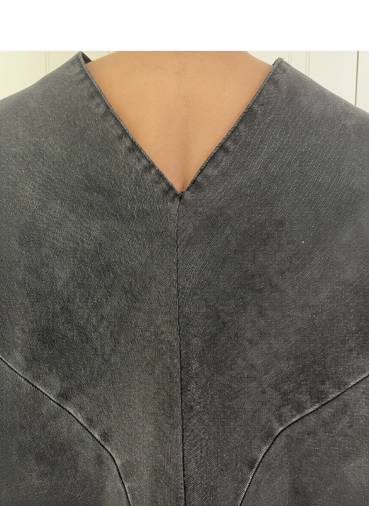
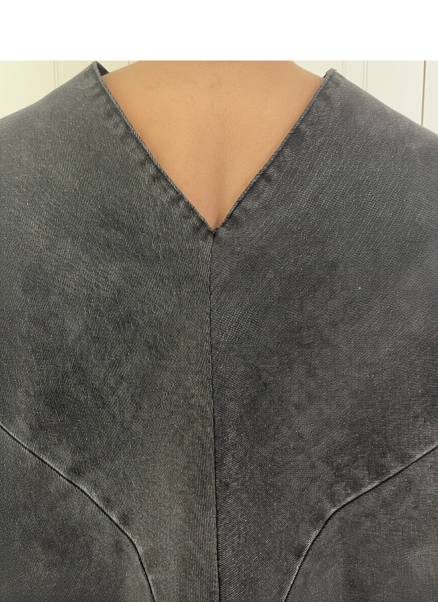

KAIKO
Overview:
Kaiko es un proyecto de diseño textil que explora la sostenibilidad a través de procesos innovadores. Este proyecto combina técnicas tradicionales con enfoques contemporáneos para crear textiles únicos con conciencia ambiental.
Especificaciones:
- Diseño textil sostenible
- Experimentación con materiales
- Desarrollo de producto
- Fotografía de detalle
- Documentación de proceso
 
